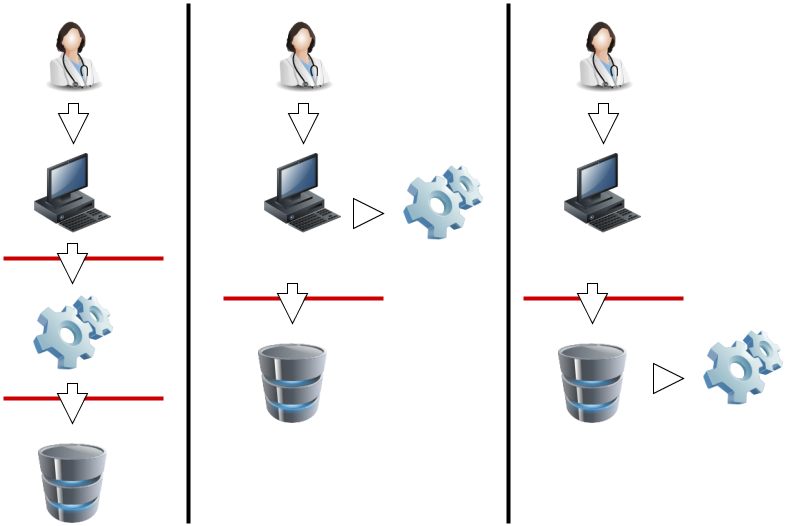

Current Build

 Security and Privacy
Security and PrivacyFHIR Infrastructure  Work Group Work Group | Maturity Level: N/A | Ballot Status: STU 3 |
Fast Healthcare Interoperability Resources (FHIR) is not a security protocol, nor does it define any security related functionality. However, FHIR does define exchange protocols and content models that need to be used with various security protocols defined elsewhere. This section gathers all information about security in one section. A summary:
Time critical concerns regarding security flaws in the FHIR specification should be addressed to
the FHIR email
list for prompt consideration.
Implementers should track the developing IHE IUA Profile for additional security considerations.
A production FHIR system will need some kind of security sub-system that administers users, user authentication, and user authorization. Where this subsystem fits into the deployment architecture is a matter for system design:
|  |
|
In this diagram, the red lines represent FHIR interfaces. From the perspective of the FHIR API, the client (consumer of FHIR services) may either interact with a security system that manifests as a FHIR server, and which depends on a subsequent FHIR interface to provide the actual storage, or either the client or server interacts with the security system independently. In each of these 3 scenarios, the different components may be assembled into applications or network components differently, but the same logical layout applies. The FHIR specification assumes that a security system exists, and that it may be deployed in front of or behind the FHIR API.
The security system includes the following subsystems:
Because there are a plethora of standards relating to the administration and functionality of the security system, FHIR does not provide user, profile, or other such administration resources. Instead, the FHIR resources are the targets of the policies expressed in these other approaches. What FHIR does specify is a way to apply security labels to resources so that a security system may use these (along with the contents of the resources if appropriate) to determine whether a user is authorized to perform a particular FHIR operation or not.
For the RESTful API, normal HTTP security rules apply.
Please follow the HTTP specification Security Considerations section 15 .
The Service Root URL will specify whether SSL is required.
Client authentication may be required by the server, possibly including the requirement for
client certificates.
TLS/SSL SHOULD be used for all production data exchange. The TLS/SSL communications are established prior to any HTTP command/response, so the whole FHIR interaction is protected by the SSL/TLS communications. The security of the endpoints of the TLS/SSL communications must be risk-managed, so as to prevent inappropriate risks (e.g. audit logging of the GET parameters into an unprotected audit log).
To support browser-based client applications, servers SHOULD
implement cross-origin resource sharing for the REST operations.
Chained search implementations need to observe the restrictions on a user in the chained search, and that it would be normal to simply omit resources from the search if the user is not authorized, but a server may elect to add an OperationOutcome to indicate that additional resources may be available if other access tokens are used (e.g. break the glass) (example).
Other than testing systems, FHIR servers should authenticate the clients.
The server may choose to authenticate the client system and trust it, or to authenticate
the individual user by a variety of techniques. For web-centric use,
OAuth may be used to authenticate and/or authorize
the users. The Smart-On-FHIR profile
on OAuth is tightly integrated with FHIR and is the preferred method for using OAuth.
The HEART Working Group has developed a
set of privacy and security specifications that enable an individual to control the
authorization of access to RESTful health-related data sharing APIs, and to facilitate
the development of interoperable implementations of these specifications by others.
Correctly identifying people, devices, locations and organizations is one of the foundations that any security system is built on. Most applications of security protocols, whether authentication, access control, digital signatures, etc. rely on the correct mapping between the relevant resources and the underlying systems. Note that this isn't necessary. There is nothing in FHIR that requires or relies on any security being in place, or any particular implementation. However, real world usage will generally require this.
A holder of data should not allow the data to be communicated unless there are sufficient assurances that the other party is authorized to receive it. This is true for a client creating a resource through a PUT/POST, as much as it is true for a server returning resources on a GET. The presumption is that without proper authorization, to the satisfaction of the data holder, the data does not get communicated.
Two of the classic Access Control models are: Role-Based Access Control (RBAC), and Attribute-Based Access Control (ABAC).
In Role-Based Access Control (RBAC), permissions are operations on an object that a user wishes to access. Permissions are grouped into roles. A role characterizes the functions a user is allowed to perform. Roles are assigned to users. If the user’s role has the appropriate permissions to access an object, then that user is granted access to the object. FHIR readily enables RBAC, as FHIR Resources are object types and the CRUDE events (the FHIR equivalent to permissions in the RBAC scheme) are operations on those objects.
In Attribute-Based Access Control (ABAC), a user requests to perform operations on objects. That user's access request is granted or denied based on a set of access control policies that are specified in terms of attributes and conditions. FHIR readily enables ABAC, as instances of a Resource in FHIR (again, Resources are object types) can have attributes associated with them. These attributes include security tags, environment conditions, and a host of user and object characteristics, which are the same attributes as those used in ABAC. Attributes help define the access control policies that determine the operations a user may perform on a Resource (in FHIR) or object (in ABAC). For example, a tag (or attribute) may specify that the identified Resource (object) is not to be further disclosed without explicit consent from the patient.
The rules behind the access control decision are often very complex, and potentially depends on information sourced from:
For one source of further information, see the
IHE Access Control white paper
Access control constraints may result in data returned in a read or search being redacted or otherwise restricted. See Variations between Submitted data and Retrieved data.
A web-server, especially hosting FHIR, must choose the response carefully when an Access Denied condition exists. Returning too much information may expose details that should not be communicated. The Access Denied condition might be because of missing but required Authentication, the user is not authorized to access the endpoint, the user is not authorized to access specific data, or other policy reasons.
To balance usability of the returned result vs appropriate protection, the actual result method used needs to be controlled by policy and context. Typical methods of handling Access Denied used are:
Return a Success with Bundle containing zero results – This result is indistinguishable from the case where no data is known. When consistently returned on Access Denied, this will not expose which patients exist, or what data might be blinded. This method is also consistent with cases where some results are authorized while other results are blinded. This can only be used when the returning a Bundle is a valid result.
Return a 404 “Not Found” – This also protects from data leakage as it is indistinguishable from a query against a resource that doesn’t exist. It does however leak that the user authentication is validated.
Return a 403 “Forbidden” – This communicates that the reason for the failure is an Authorization failure. It should only be used when the client and/or user is well enough known to be given this information. Thus this method is most used when the user is allowed to know that they are forbidden access. It doesn’t explain how the user might change things to become authorized.
Return a 401 “Unauthorized” – This communicates that user authentication was attempted and failed to be authenticated.
FHIR provides an AuditEvent resource suitable for use by FHIR clients and servers to record when a security or privacy relevant event has occurred. This form of audit logging records as much detail as reasonable at the time the event happened.
When used to record security and privacy relevant events, the AuditEvent can then be
used by properly authorized applications to support audit reporting, alerting, filtering,
and forwarding. This model has been developed and used in healthcare for a decade as
IHE-ATNA profile .
ATNA log events can be automatically converted to AuditEvent resources, and from there,
client applications are able to search the audit events, or subscribe to them.
With regard to HTTP logs, implementers need to consider the implications of distributing access to the logs. HTTP logs, including those that only contain the URL itself, should be regarded as being as sensitive as the resources themselves. Even if direct PHI is kept out of the logs by careful avoidance of search parameters (e.g. by using POST), the logs will still contain a rich set of information about the clinical records.
This specification recommends the use of W3C Digital Signatures for signatures.
Resources can be signed using the Provenance resource to carry a
detached digital signature .
The Signature datatype is available to support various signature types including non-repudiation purposes.
Further details on creation and validation of Signatures are defined.
In addition, documents may be signed using an
enveloped
signature. A specification for enveloped signature is profiled in
the IHE DSG profile .
Neither of these definitions prohibits the use of other ways of using digital signatures.
DSTU Note: the use of signatures with RESTful interfaces is a poorly understood area, and we would welcome reports of implementation experience.
Feedback here
Several FHIR resources include attachments. Attachments can either be references to content found elsewhere or included inline encoded in base64. Attachments represent security risks in a way that FHIR resources do not, since some attachments contain executable code. Implementers should always use caution when handling resources.
See Security Labels.
FHIR resources include an XHTML narrative, so that applications can display the contents of the resource to users
without having to fully and correctly process the data in the resource. However, displaying HTML is associated
with several known security issues that have been observed in production systems in other contexts (e.g.
with CDA ). For
this reason, the FHIR narrative is not allowed to contain active content.
However, care is still needed when displaying the narrative:
Also note that the inclusion of an external reference to an image can allow the server that hosts the image to track when the resource is displayed. This may be a feature or a problem depending on the context.
In addition to narrative, Documents may also contain stylesheets. Unlike with CDA, the stylesheets are simple CSS stylesheets, not executable XSLT, so the same security risks do not apply. However CSS stylesheets may still reference external content (e.g. background images), and applications displaying documents should ensure that CSS links are not automatically followed without checking their safety first, and that session/identifying information does not leak with any use of external links.
© HL7.org 2011+. FHIR STU3 Candidate (v1.7.0-10082) generated on Thu, Oct 27, 2016 16:28+0000. QA Page
Links: Search |
Version History |
Table of Contents |
Compare to DSTU2 |
 |
Propose a change
|
Propose a change